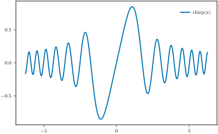
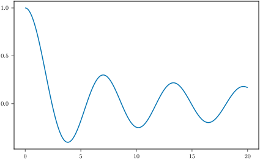
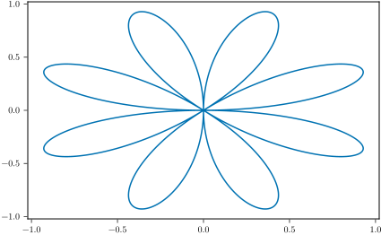
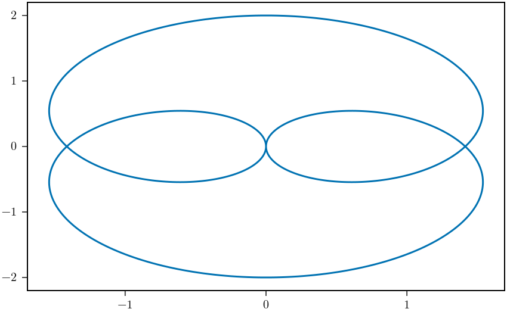
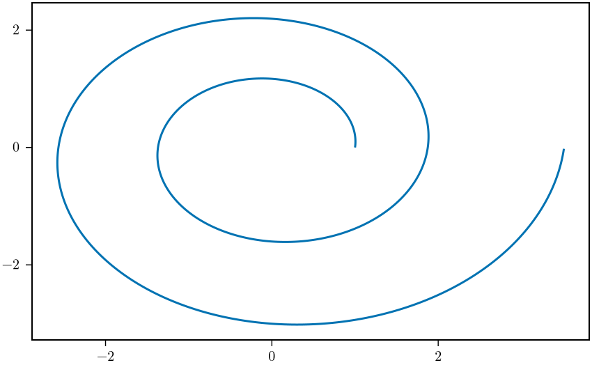

Documenter Integration
MakieMaestro.jl includes a plugin for Documenter.jl that allows you to embed Makie figures directly into your documentation using code blocks.
Setup
To use the MakieMaestro ↔ Documenter plugin in your documentation, add the following to your docs/make.jl file:
using Documenter, MakieMaestro
using YourPackage
# Make sure to set a default width or use the `size` option in the `@makie` block
MakieMaestro.Themes.width!(15u"cm")
# Create the MakiePlugin with optional customization
makie_blocks = MakieDocBlocks(;
path="assets/my_figure_dir", # default is "assets/figs",
# Optionally specify the export formats (default: [:svg, :pdf])
formats=[:svg, :png, :pdf, :eps],
)
makedocs(
# ... your existing Documenter options ...
plugins = [makie_blocks],
)MakieMaestro.MakieDocBlocks — FunctionMakieDocBlocks(;path=@__DIR__ * "assets/figs/", formats=[:svg, :pdf])Create the plugin for generating Documenter figures from blocks of code in the documentation pages.
It is not necessary to create the plugin with MakieDocBlocks. As long as you do not want to change the default settings of the plugin. You only need to load MakieMaestro to use the Documenter plugin. However, consider defining the plugin if you are developing a package with other contributors as it is more explicit and will make it easier for them to understand the documentation generation process.
The target figure directory should not be preceded by a slash.
# MakieDocBlocks(;path="/assets/my_figure_dir") # ⚠️ DOESN'T WORK!!!
MakieDocBlocks(;path="assets/my_figure_dir") # ⬅️ USE THISFor more details about this issue, see the functioning of joinpath
For the CI to be able to build figures using GLMakie you need to set up a screen in the CI environment. You can do this by prepending the command with DISPLAY=:0 xvfb-run -s '-screen 0 1024x768x24' --. For example to build the documentation, you will run the command
DISPLAY=:0 xvfb-run -s '-screen 0 1024x768x24' -- julia --project --color=yes make.jlLook at the workflows in this repository for a working example.
Basic Usage
Once the plugin is set up, you can include Makie figures in your documentation using code blocks with the @makie language tag:
```@makie
# Your code for generating the figure
fig # Return the figure at the end of the block
```The code will be executed during the documentation build, and the resulting figure will be saved and inserted into your documentation as an image (specifically the Documenter LocalImage).
The code in the block must return a Figure in order to work.
using MakieMaestro is already included at the top of the block for convenience so there is no need to add it yourself.
You can also use named blocks with the same format as for the documenter @example block. The code will be evaluated in the same module as the @example blocks with this name, so it will have the global variables at its disposal.
For example this is possible to have
```@example wavepocket
x = -2.2:0.01:2.2
y = @. exp(-x^2) * cos(5x)
```
```@makie wavepocket
lines(x,y)
```It is also possible to specify some of the options for savefig to modify the size, file name, theme, etc. See Advanced Usage for further details.
Example
Here's an example of using the @makie code block in documentation:
This code block
```@makie
x = -2π:0.01:2π
fig,ax,_ = lines(x, sin.(x.^2) ./ x, linewidth = 2, label = "chirp(x)")
axislegend(ax)
fig
```generates the following figure

This @example and @makie blocks are evaluated in the same module
```@example besselj
using SpecialFunctions
x = 0:0.01:20
y = besselj0.(x)
nothing # hide
```
```@makie besselj
lines(x,y)
```and produce
using SpecialFunctions
x = 0:0.01:20
y = besselj0.(x)
Advanced Usage
Any options specified after a ; in the @makie block will be parsed used for saving or showing the figure in the documentation.
The options that can be specified are:
basename– Changes the figure path name. By default the basename to save the figure as is"makie_$(name)_$(hash(code))"
```@makie named_figure; basename="rose"
θs = 0:0.01:4π
rs = sin.(4θs)
x,y = rs .* cos.(θs), rs .* sin.(θs)
lines(x,y)
```
formats– Specify the export formats to use for the figure. You can specify a single format as a symbol or a vector of symbols. The default is determined by the plugin options.
```@makie hypotrochoid; formats = :png
ts = 0:0.01:2π
x = @. cos(ts) - cos(3ts)
y = @. sin(ts) - sin(3ts)
lines(x,y)
```
```@makie exponential_spiral; formats = [:png, :pdf]
θs = 0:0.01:4π
rs = @. exp(0.1θs)
x,y = rs .* cos.(θs), rs .* sin.(θs)
lines(x,y)
```If you choose to export to a png the figure will span the full width of the documentation page. If you want to enforce the size of the figure exported, you need to use the :svg format (which is default).
If you use images or GridLike/CellLike plots in your documentation, you should be using them with the :png format. It is possible to export these plots to :svg but it leads to performance issues in the browser since vector graphics are really not meant for use with image like graphics.

caption– Attach a caption under the figure in the documentation.size– Specify the size of the figure to export. All of the options that can be passed tosavefigare possible
using GeometryBasics
struct FitzhughNagumo{T}
ϵ::T
s::T
γ::T
β::T
end
P = FitzhughNagumo(0.1, 0.0, 1.5, 0.8)
f(x, P::FitzhughNagumo) = Point2f(
(x[1]-x[2]-x[1]^3+P.s)/P.ϵ,
P.γ*x[1]-x[2] + P.β
)
f(x) = f(x, P)f (generic function with 2 methods)```@makie large_figure; size=25u"cm"
streamplot(f, -1.5..1.5, -1.5..1.5, colormap = :magma)
```
alt– Specify an alternate text to add to the figure in the HTML output. (alt_figure; alt = "A figure")